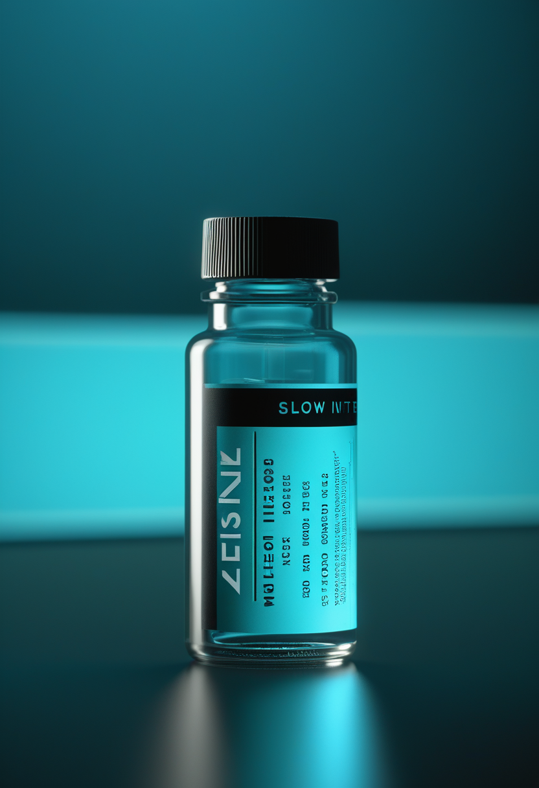
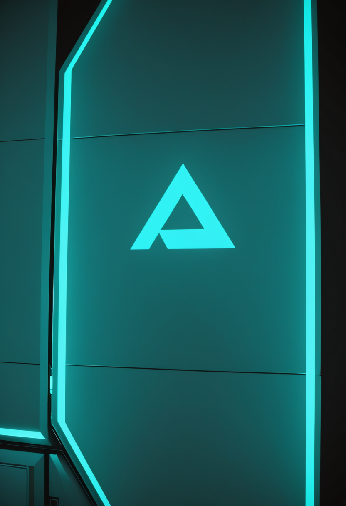
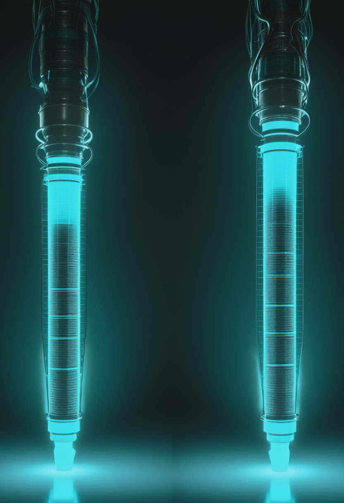
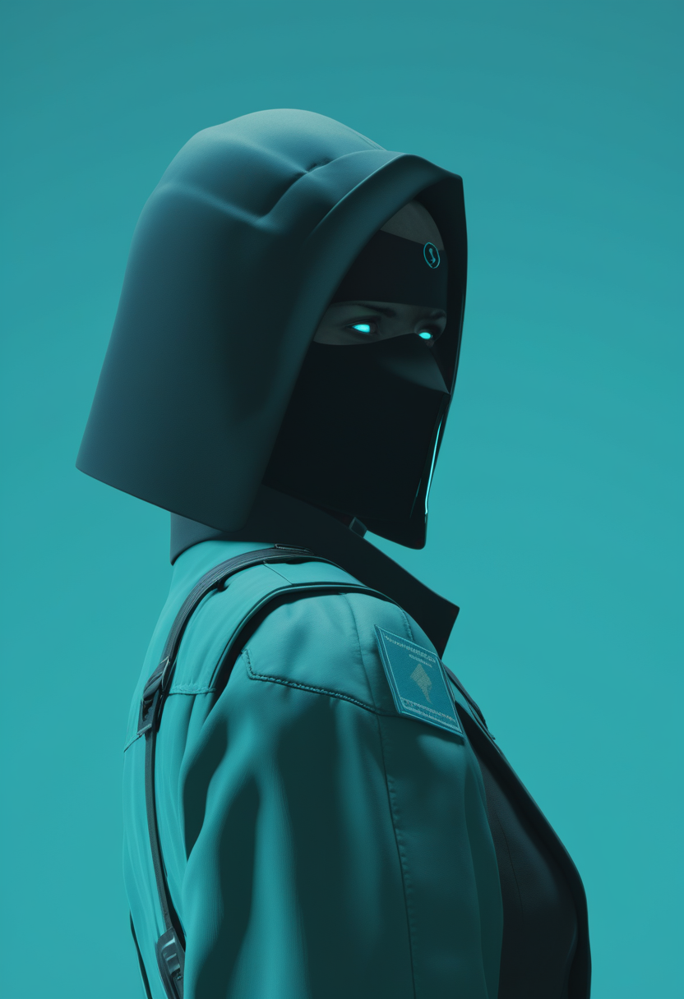
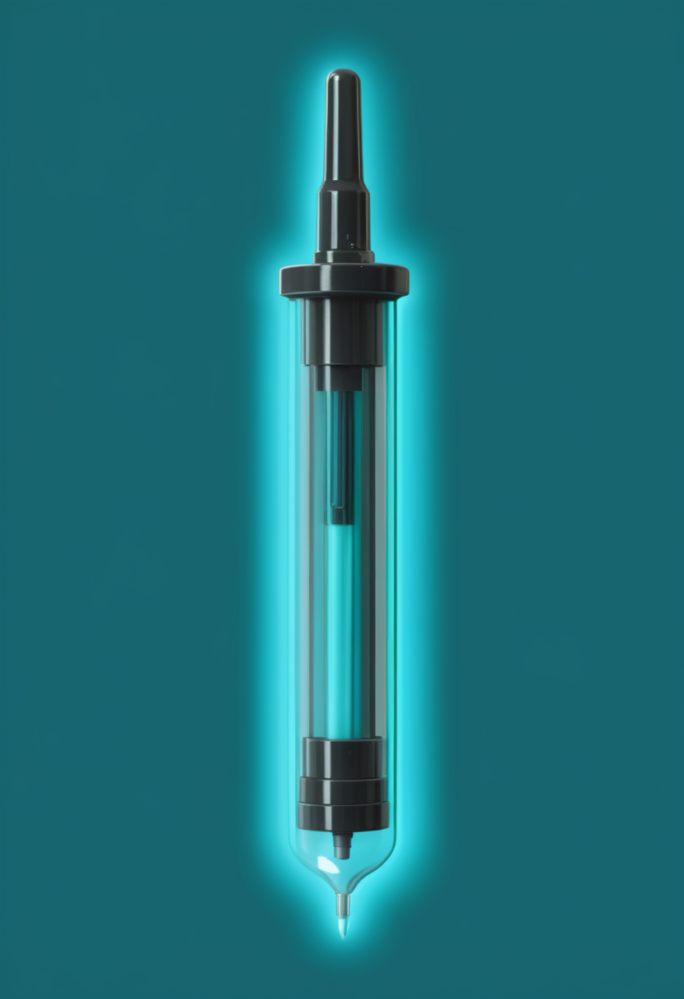
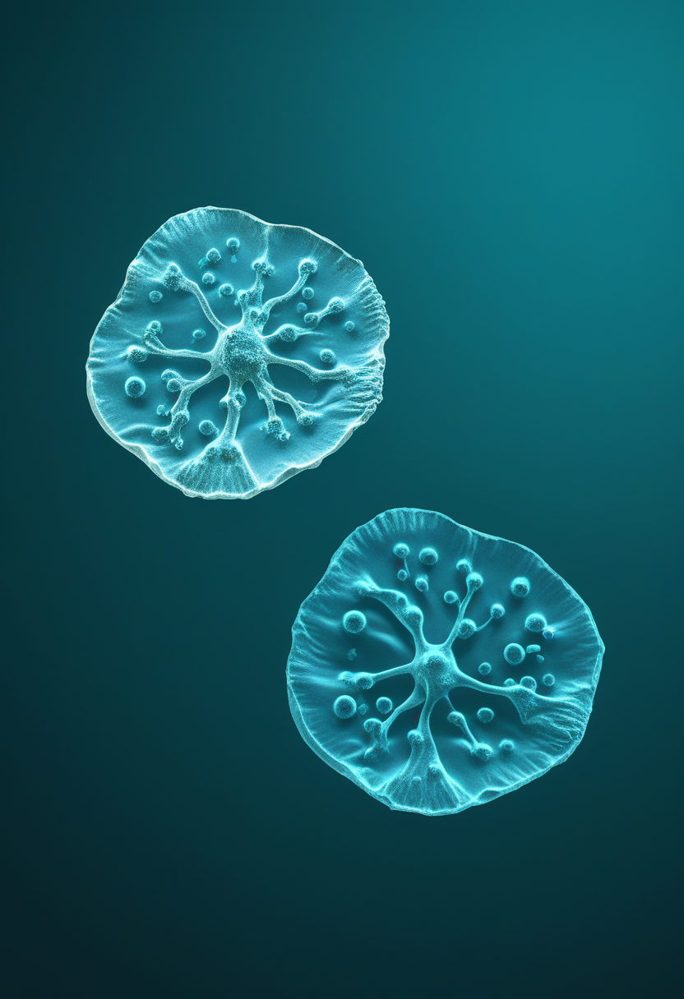
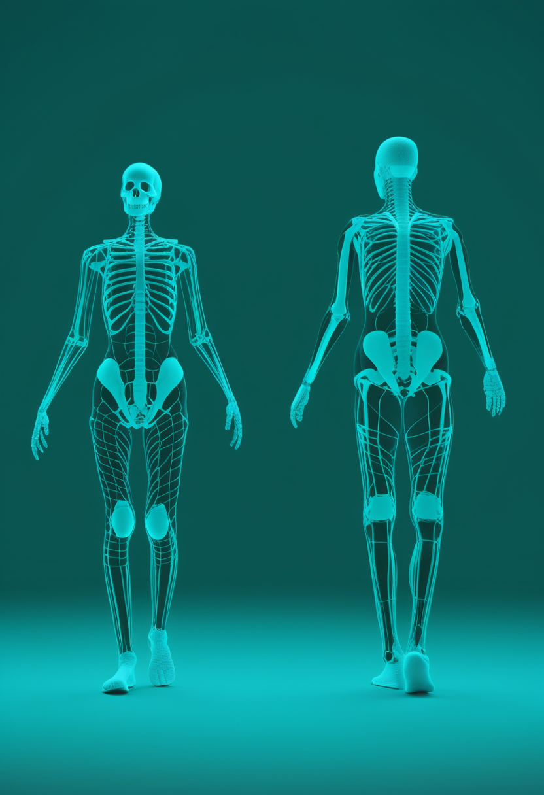
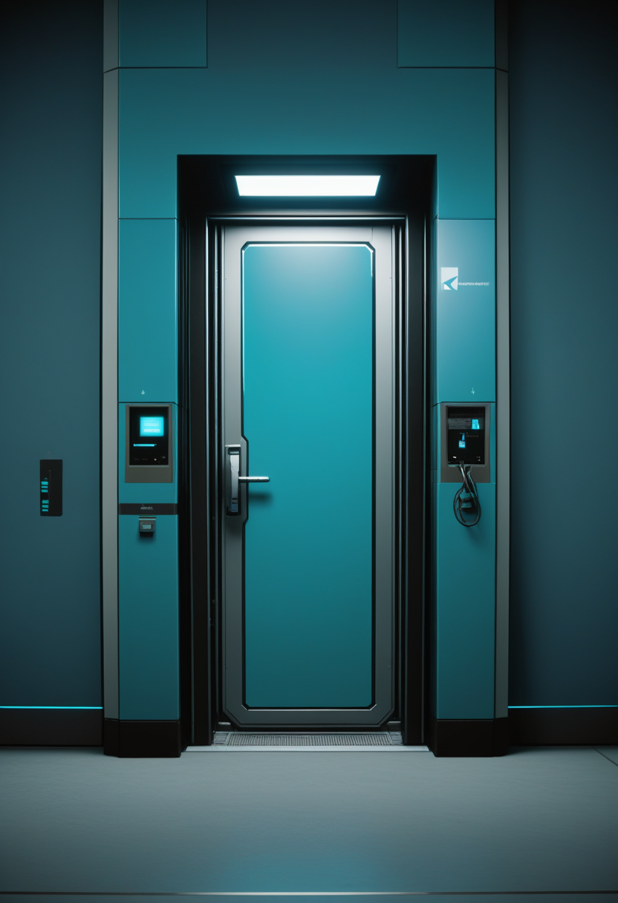

土曜日の便り。コンゴ民主共和国のエボラは、8月27日のECDC更新で確定5,794例・死亡2,786人となり、報告1日で+81例・+42人と直前の+57例・+29人を上回る加速を見せた。同じ8月27日、キサンガニで前線医療従事者向けのErvebo接種が始まったが、このワクチンが承認されているのはZaire型に対してで、今回のBundibugyo型への効果は確認されていない。命の章では、アピテグロマブの承認判断まで残り32日となったこと、サラナーセンの3本の第3相試験がSTELLAR-1・STELLAR-2・SOLARの名で動き出したこと、そして日本の新生児スクリーニングが全国公費化への移行期にあることを伝える。自由の章では、Neuralinkが被験者21人・4カ国・5プログラムに達し次の焦点をBlindsightに移していること、視線入力研究が四つの軸に集約しつつも「疲れる」という壁を抱えていることを報じる。基盤の章は、エボラの最新数字とErvebo接種開始、そして米国で今年初の麻疹関連死2人が確認されたことを扱う。畏敬の章では、ローマン宇宙望遠鏡が打ち上げ準備審査で「GO」判定を受けたこと、中国の研究チームが320km離れた量子センサー網で暗黒物質の制約を狭めたこと、そしてFDAが8月に初のCELMoDと腫瘍溶解ウイルス療法を迅速承認したことを伝える。そして美の章では、ショウジョウバエの脳「アップロード」への専門家の反論、ニューロ・ジャスティスという新しい枠組み、AIの道徳的地位をめぐる研究が制度として動き出したことを並べた。

8/27号の続報 ― 8月27日、コンゴ民主共和国の保健相はキサンガニで、前線の医療従事者を対象にしたエボラワクチン接種キャンペーンを開始した。使われているのはErvebo(rVSV-ZEBOV)である。同じ8月27日に更新されたECDCの集計は、確定5,794例・関連死亡2,786を示した ― 報告データは8月26日まで、報告1日で+81例・+42人。直前の報告日の+57例・+29人を上回っている。報告数から計算した致死率は約48.1%で、隔離入院は843人、特定された接触者の82.3%が追跡下にある。影響を受けているのは6州、151保健区のうち60保健区である。ここには一つの厄介な事実がある。Erveboが承認されているのはZaire型エボラウイルスに対してであって、今回流行しているBundibugyo型に対する有効性は確認されていない。交差防御を期待した緊急の使用であり、効くかどうかは打ちながら確かめることになる。ワクチンが動き出した日に報告が加速したという並びは、因果ではなく時間差の話である ― 接種は数日前に感染した人には間に合わない。問われているのは、この差をどれだけ縮められるかだ。

9月30日のFDA判断期限まで、本日から32日。Scholar Rockが8月21日に公表した内容は、審査の主戦場が薬そのものではなく製造にあることを示している。査察でOAI(公的措置が必要)と分類された充填施設Catalent Indianaを生物学的製剤承認申請(BLA)から外し、第2の充填施設のみで審査が進行中である。PDUFA日は9月30日のまま変更なく、同社は承認が期限までのいつでも下りうるとして、承認と同時に米国で発売できる体制を整えたとしている。アピテグロマブは、SMAで筋肉そのものを標的とする候補として初めて、主要な第3相試験(SAPPHIRE)で統計学的に有意かつ臨床的に意味のある効果を示した薬剤である。

ビオジェンのサラナーセンは、年1回投与を目指すスピンラザ(ヌシネルセン)の後継候補として、3本のグローバル第3相試験に入った。STELLAR-1、STELLAR-2、SOLARの三つで、発症前の乳児から10代・成人までSMAの広い範囲を対象に設計されている。STELLAR-1はすでにスクリーニングを開始し、SOLARは2026年第2四半期、STELLAR-2は第3四半期の開始が計画された。FDAはサラナーセンにブレークスルーセラピー指定を与えている。第1相では、遺伝子治療を受けたにもかかわらず臨床状態が十分でなかった患者で神経変性の減速と機能改善が見られ、WHOの運動マイルストーンを新たに獲得した例も報告された。
発症前に見つけて発症前に治療する、という前提を作るのが新生児スクリーニングである。日本ではこれが自治体単位の任意検査から全国公費化へ向かう移行期にあり、こども家庭庁の実証事業として神奈川県・横浜市・川崎市・相模原市が2024年10月1日の採血分から、重症複合免疫不全症(SCID)と脊髄性筋萎縮症(SMA)の公費検査を開始した。検査は新生児の乾燥ろ紙血からSMN1遺伝子エクソン7の欠失を調べ、陽性となった場合はMLPAやddPCRで確認する流れである。2016年のヌシネルセン承認から現在までにSMAの治療選択肢は大きく広がっており、発症前に見つかった子どもに何を投与できるかという問いの側は、以前より答えやすくなっている。
SMAの三本は、薬・試験・見つけ方という別々の層にある。アピテグロマブの日程を決めているのは充填工場で、サラナーセンの勝負どころは年1回という間隔、そして新生児スクリーニングは薬が届く前の段階を作っている。治療の選択肢が増えるほど、律速は「効くかどうか」から「間に合うかどうか」へ移る ― 今号の感染症の項と同じ構図である。
Neuralinkの臨床展開は、5つの治療プログラム、4カ国、被験者21人という規模に達している。全試験を通じて機器関連の重篤な有害事象は報告されていない。次の焦点は視覚野を刺激するBlindsightで、2024年9月にFDAのブレークスルー機器指定を受け、初のヒト試験が2026年に予定される ― 両眼または視神経を失った人に低解像度の視覚入力をもたらす構想で、初期の見え方は同社自身が「アタリのグラフィックス」程度と説明している。発話の回復についても2026年春にデモが公開されたが、思考から出力までに数秒の遅れが残る。
2020年から2025年までの1,033件を対象にしたHCI分野の視線研究のサイエンスマッピングが公表された。研究は四つの軸に集約している ― 深層学習による視線推定、XR環境での相互作用パラダイム、認知負荷と人間工学、そしてユーザビリティとアクセシビリティ指向の設計である。被引用の中心は没入環境での視線相互作用、視線推定の深層学習、多モーダル相互作用、認知負荷の生理学的評価に集まる。臨床の側では、視線入力がALS患者の主体性と生活の質を回復させる一方、操作時の精神的作業負荷の高さが支援機器の放棄につながる要因として指摘されており、速度だけでは測れない指標が残っている。
承認の順序が逆転している。米国は被験者21人・重篤事象ゼロという臨床の数字を積み上げながら、市販前承認(PMA)を受けた運動制御用BCIはまだ一つもない。中国は3月にNEOを商用承認し、償還の議論に入った。一方で、いま実際に人の意思疎通を支えているのは視線入力であり、その研究の主要な壁は精度ではなく「疲れる」ことだった。速い技術と、届いている技術と、売れる技術は、それぞれ別のものである。

ECDCの8月27日更新(報告データは8月26日まで)で、コンゴ民主共和国のエボラ(Bundibugyo型)は確定5,794例、関連死亡2,786となった。前報(8月26日更新、データは8月25日まで)の5,713例・2,744人から報告1日で+81例・+42人で、直前の報告日の+57例・+29人を上回る増え方である。報告数から計算した致死率は約48.1%、隔離入院は843人、特定された接触者の82.3%が追跡下にある。地理的な広がりは6州・60保健区(全151保健区中)で、WHOは現在の流行を「これまでで最も致死的なBundibugyo型の流行」と位置づけつつ、止められると明言している。

8月27日、コンゴ民主共和国の保健相はキサンガニで、前線従事者を対象としたErvebo(rVSV-ZEBOV)によるエボラワクチン接種キャンペーンを開始した。医療従事者から先に守るという判断で、これまでの流行でも繰り返された順序である。ただしErveboが承認されているのはZaire型エボラウイルスに対してであり、今回のBundibugyo型に対する有効性は確認されていない ― 交差防御を期待した緊急使用にあたる。米CDCはMMWRで米国民へのリスク評価を公表しており、渡航関連の輸入例に備えた監視体制の考え方を示している。
ペンシルベニア州保健当局は8月25日、麻疹に関連する2人の死亡を発表した。2026年の米国で確認された初の麻疹死亡であり、同州では35年ぶりである。2人はいずれも未接種で、州内最大の流行が続くランカスター郡の住民、うち1人は乳児だった。同州の2026年の報告は393例、うちランカスター郡が185例で、全米では8月20日時点で2,777例 ― 2000年の排除宣言以降で最多の年間報告数である。2026年の確定例のうち約93%が未接種または接種歴不明で、MMRワクチンの就学児接種率は2019〜2020年度の95.2%から2024〜2025年度の92.5%へ下がった。米国の麻疹排除認定は11月に判定が予定されている。
三本を並べると、いずれも「間に合うか」の話である。エボラのワクチンは8月27日に打たれ始めたが、その日の報告に載った81例はもっと前に感染している。麻疹で亡くなった2人は未接種で、ワクチンは存在していた。片方は効くかどうかが分からないまま急いで打っている薬で、もう片方は効くと分かっているのに打たれなかった薬だ。公衆衛生の失敗は、たいていこの二つのどちらかの形をとる。
NASAのローマン宇宙望遠鏡は、8月28日にケネディ宇宙センターで開かれたNASAとSpaceXの打ち上げ準備審査(LRR)で「GO」の判定を受けた。LRRは秒読みに入る前の最終審査で、ファルコン・ヘビー、観測装置、天候、支援チームの準備が整っているかを確認する。打ち上げは8月30日午前7時26分(米東部夏時間)、LC-39Aから。宇宙軍第45気象隊の予報では好天確率60%で、遅延した場合の予備窓は8月31日午前7時22分(同)である。行き先は地球から約150万km離れた太陽・地球系のラグランジュ点L2。広視野装置(WFI)は18個の近赤外検出器で合計0.281平方度を一度に撮影する ― STScIはこれをハッブルの赤外視野の約200倍と記し、NASAの一般向け説明では一度に捉える天域が約100倍と表現される(比較の基準が異なる)。正式なコミット日2027年5月から9カ月の前倒しである。
中国科学技術大学(USTC)らの研究チームが、核スピンを用いた世界初の都市間量子センサーネットワークを構築し、成果をNatureに発表した。合肥と杭州に分散した5台の核スピン量子センサーをGPS時刻で同期させ、基線は約320km。狙いはアクシオンである ― 初期宇宙の相転移でアクシオン場が作るトポロジカル欠陥を地球が横切るとき、欠陥が核スピンと相互作用して信号を生むと予想される。技術の核心は、マイクロ秒規模で過ぎ去る信号を長寿命の核スピンコヒーレント状態に「保存」し、分単位で読み出す点にあった。自製のスピン増幅技術で微弱信号を100倍以上に増やし、スピン回転の感度を約1マイクロラジアンまで高めた結果、アクシオン・核子結合の取りうる値を、天体物理観測が与えていた従来の限界より厳しく制限した。

医学側では、8月に二つの迅速承認が出ている。8月13日、FDAはiberdomide(Zenbexus、ブリストル・マイヤーズ スクイブ)を、ダラツムマブ・ヒアルロニダーゼおよびデキサメタゾンとの併用で、プロテアソーム阻害薬と免疫調節薬を含む前治療を1つ以上受けた成人の多発性骨髄腫に承認した。承認された初のセレブロンE3リガーゼ調節薬(CELMoD)で、経口の新しい薬剤クラスが骨髄腫治療に加わったことになる。根拠は微小残存病変(MRD)陰性の完全奏効率で、次世代フローによる10のマイナス5乗の基準で41%対21%(P値は0.0001未満)だった。8月6日には、遺伝子改変した腫瘍溶解ウイルス療法のvusolimogene oderparepvec(Tudriqev)が、ニボルマブとの併用で、PD-1阻害抗体を含むレジメンで進行した切除不能進行皮膚黒色腫の成人に迅速承認されている。
三本とも「感度を上げる」話として読める。ローマンは一度に0.281平方度を撮ることで、これまで数百回の観測を要した天域を一枚に収める。合肥と杭州の5台は、320kmという距離そのものを検出器の一部にして、天体物理の制約を超えた。骨髄腫の承認は、腫瘍が消えたかどうかではなく、10万個に1個の細胞まで見えるMRDの基準で判断された。見える単位が細かくなると、判断の根拠そのものが変わる。

Eon Systemsは2026年3月、ショウジョウバエの脳を「アップロードした」と発表した。実体は、FlyWireが2024年に完成させた成虫の全脳コネクトーム ― 139,255個のニューロンと5,000万を超えるシナプス結合 ― に単純な神経細胞モデルを適用し、MuJoCoの物理シミュレーション上の身体に接続して、知覚から行動までの閉ループを回したものである。同社は行動の一致率91%を報告した。これに対しCarboncopies財団は「ハエはアップロードされていない」と題する反論を公表し、歩行の知能が身体モデル側に置かれていることを問題にした ― 脳モデルがノイズの多い信号を送っても、身体モデルの姿勢安定化と既定の歩容がそれを「一歩」に整形してしまうため、観客が見ているのは身体モデルが脳モデルの誤りを補正している姿かもしれない、という指摘である。妥当性の検証には出力の一致ではなく、中枢パターン発生器の律動など約12万5,000個のニューロンの内部動態を確かめる必要があるとする。Eon Systemsの次の目標はマウス脳(約7,000万ニューロン)で、ヒトの約860億ニューロンまではなお遠い。

Frontiers in Public Healthに掲載された論文は、法的な「ニューロライツ(神経権)」より広い枠組みとして「ニューロ・ジャスティス」を提起する。生命倫理の枠組みとして分配の公正と認知的主権の保護を扱い、認知増強をめぐる分配的正義の批判とグローバルサウスからの脱植民地的視点を統合する構成である。著者の指摘は具体的だ ― グローバルノースでは議論の中心が増強の自由と、利用者の自律とプライバシーを守る規制にあるのに対し、グローバルサウスの中心的な問題はもっと手前、患者がアクセスできるだけの公衆衛生システムを作れるかにある。加えて、神経技術の多くとその基盤アルゴリズムがWEIRD(西洋・高学歴・工業化・富裕・民主主義)集団のデータで較正されており、人類のごく一部しか代表していないと述べる。各国の科学技術投資はまず臨床的必要に応える神経技術を優先すべきだ、というのが結論である。
8月26日号はAI意識研究の「問い直し」を扱ったが、その制度面が固まりつつある。Eleos AIとニューヨーク大学Center for Mind, Ethics, and Policyの共同報告は、近い将来のAIシステムに意識ないし頑健な行為主体性 ― したがって道徳的な重み ― が生じる現実的な可能性があると論じ、AI企業への提言をまとめた。著者にはRobert Long氏、Jeff Sebo氏に加え、Jonathan Birch氏、David Chalmers氏、Kyle Fish氏らが名を連ねる。道徳的配慮に至る経路として、意識・感覚(快苦のような価値づけられた経験があるか)と行為主体性(頑健な目標と選好があるか)の二つが挙げられている。AnthropicはKyle Fish氏を初の専任研究者として迎え、モデルの選好や苦痛の兆候を調べるモデル福祉プログラムを立ち上げた。Eleos AIはモデルへの聞き取りと行動実験を組み合わせた外部評価も実施している。
三本が同じ論点の周りを回っている ― 何をもって「本物」と認めるか。ハエの件では、出力が91%一致しても内部動態を見なければ写しとは呼べない、という基準が立てられた。ニューロ・ジャスティスは、権利の議論が増強の自由に偏る前に、そもそも装置に触れられるかを見よと言う。AI福祉の報告は、意識の有無を決める前に道徳的配慮の対象になりうると認めるほうを選んだ。判定を先延ばしにできない場面が、三つとも同時に来ている。
コンゴ民主共和国のエボラは、8月27日のECDC更新で確定5,794例・死亡2,786人となり、報告1日で+81例・+42人と直前の+57例・+29人を上回る加速を見せた。同じ8月27日、キサンガニで前線医療従事者向けのErvebo接種が始まったが、このワクチンが承認されているのはZaire型に対してで、今回のBundibugyo型への効果は確認されていない。命の章では、アピテグロマブの承認判断まで残り32日となったこと、サラナーセンの3本の第3相試験がSTELLAR-1・STELLAR-2・SOLARの名で動き出したこと、そして日本の新生児スクリーニングが全国公費化への移行期にあることを伝えた。自由の章では、Neuralinkが被験者21人・4カ国・5プログラムに達し次の焦点をBlindsightに移していること、視線入力研究が四つの軸に集約しつつも「疲れる」という壁を抱えていることを報じた。基盤の章は、エボラの最新数字とErvebo接種開始、そして米国で今年初の麻疹関連死2人が確認されたことを扱った。畏敬の章では、ローマン宇宙望遠鏡が打ち上げ準備審査で「GO」判定を受けたこと、中国の研究チームが320km離れた量子センサー網で暗黒物質の制約を狭めたこと、そしてFDAが8月に初のCELMoDと腫瘍溶解ウイルス療法を迅速承認したことを伝えた。そして美の章では、ショウジョウバエの脳「アップロード」への専門家の反論、ニューロ・ジャスティスという新しい枠組み、AIの道徳的地位をめぐる研究が制度として動き出したことを並べた。
では、また明日の朝に。 — JaH